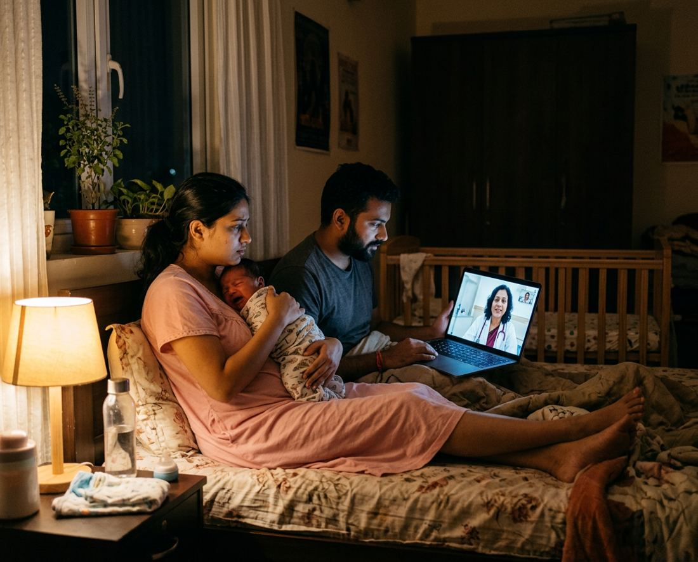
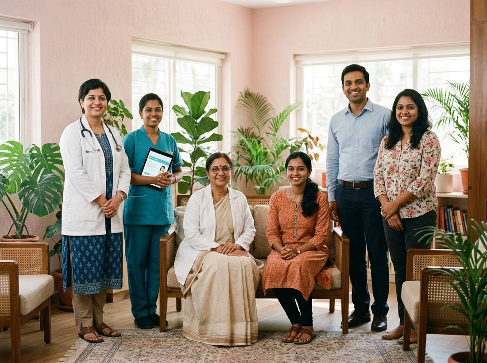
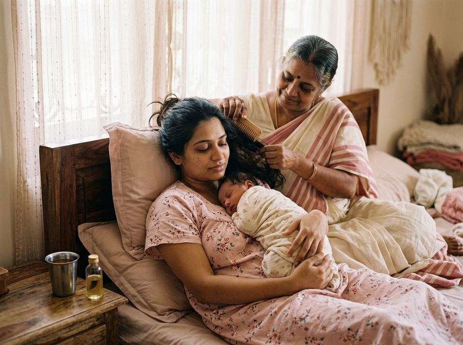
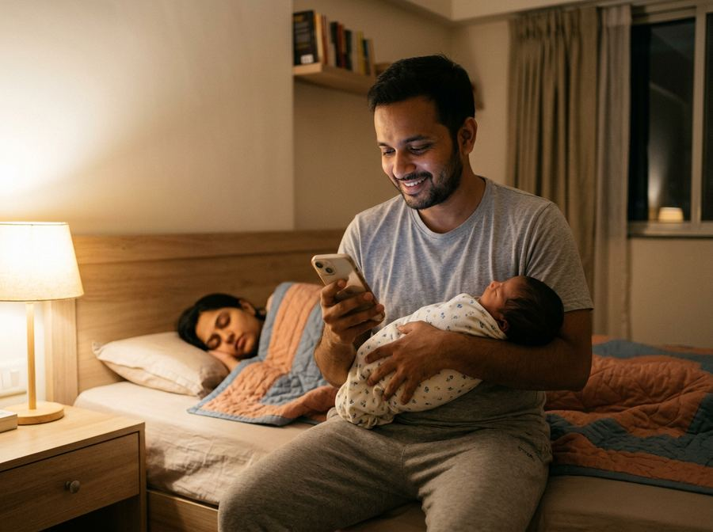

between visits (n.) the 2 a.m. fever, when no doctor is looking
Four questions. Your nurse calls you tomorrow to open your baby’s file. No payment until you’ve met the team.

What happens between visits today, and with Circle
What this is, plainly
After the hospital sends you home, every question about your baby means a clinic visit, a WhatsApp to a doctor who replies tomorrow, or a guess. Maike Circle changes that. Here is exactly what you get.
A paediatrician, a gynaecologist, a senior nurse, a lactation consultant, and a sleep, nutrition and child-development specialist. The same people for your family for the whole year. They have your baby’s file open every time they answer.
Type, send a photo or a voice note in the app. By day a person replies within ten minutes. At night you get a first answer in seconds with the signs that mean “go to the hospital now”, and a doctor confirms by morning. Two video consults a month are included.
Vaccine reminders a week before, growth checked by your doctor each month, a note to both parents every month about what happened and what’s coming, and a call from your nurse when something in the file doesn’t look right.
Your team

One chat, one number. Kavitha reads every message first and pulls the right person into the conversation; you never have to work out whom to ask.
Every doubt, covered
About your baby
About you
About the house
Real questions from Bengaluru families, grouped. Nothing is too small to ask; small questions are most of what your team answers.
What 2 a.m. looks like
You message. Within seconds you get a first answer: what this usually is at her age, what to do in the next hour, and the exact signs that mean go to the hospital now. Your nurse reads it by 7 am and your paediatrician confirms by noon. Anything serious becomes a phone call, not a chat reply.
The instant answer never names a condition you don’t already have in your file, never suggests a medicine, and never reassures you about a red flag. People do that.
You’re still the patient

Your gynaecologist and a lactation consultant are on the same thread as the paediatrician. Recovery, stitches, feeding, your body, your sleep, your mood. A mood check at six and twelve weeks, read by a person, with a call if it’s high. Every baby conversation ends with “and how are you?”
“Dr Meera asked how I was sleeping before she asked about the baby. In four months, nobody at the hospital had.”
A Circle mother, Indiranagar
Your year, planned
Vaccines explained and reminded, growth read by your doctor, what changes at each age, the days your tradition marks, and the week you go back to work. A monthly note to both parents.
Every month, to both of you

Month 3 · Aarav · from Dr Meera and Kavitha
Aarav put on 840 g this month and is on the 45th line, same as last month. Reflux has eased; three good nights out of the last seven. Priya, your mood score moved from 3 to 4; you slept more in the week Rohit took the 5 am feed. Next month: the sleep regression often starts around week 16, Nandini will write to you the week before. Second rotavirus is due on the 14th; book Cloudnine or the Jayanagar clinic, both are fine. Rohit: one thing. Take her out of the house, alone, for an hour this weekend.
Written for both parents, in the language you chose. The father’s line is written to him.
What it costs
Your nurse and your paediatrician on chat, with the night-time first answer. Video consults at ₹499. For families with a mother or mother-in-law at home.
Add if you want
Families finishing The First Ten Weeks get the first month free. Cancel at the end of any quarter; your file stays yours.
The honest comparison
| Hospital follow-ups | Consult apps | Circle | |
|---|---|---|---|
| Who answers | Your doctor, at a visit | Whoever is free | Your own team of seven |
| Knows your baby’s history | From the last visit | No | The whole file, every reply |
| 2 a.m. | Emergency or wait | ₹400–600, a stranger | Instant answer, doctor by 7 am |
| The mother after 6 weeks | Done | Book separately | Gynaec, lactation, mood: included |
| Contacts you first | No | No | Monthly note, vaccine week, a call if the file looks off |
| Cost, year one | ₹12,000–18,000 in visits | Per consult | ₹1,999 a month, 24 consults included |
Stories from families
“I messaged at 3 about a rash. The answer came before I’d put the phone down, and Kavitha’s voice note was there when I woke. I didn’t drive to the ER. I’ve stopped driving to the ER.”
Priya & Rohit, Koramangala 3rd Block · Aarav, 5 months
“When I went back to work, Kavitha had three nannies who had already read Ishaan’s file. The handover took a weekend, not a month.”
Divya N., HSR Layout · back at work since month 6
“Dr Anjali picked up that my bleeding at week nine wasn’t normal from a chat message. The hospital had discharged me at six weeks.”
Shruthi M., Jayanagar 4th Block
Names changed; stories shared with permission.
Questions
Your paediatrician and gynaecologist are registered doctors and your consults with them are medical consults. The instant answer and your care guide give guidance and triage; they never diagnose or prescribe. Anything serious is routed to a call with the doctor, or to the emergency, not to a chat reply.
It reads your message and your file, tells you what this usually is at your baby’s age, what to do in the next hour, and the exact signs that mean go to the emergency now. It never names a condition that isn’t already in your file, never suggests a medicine, and never reassures you about a red flag. A nurse reads every night conversation by 7 am.
Yes. Kavitha opens your file on a 20-minute video call: delivery, discharge summary, vaccination card, feeding, who’s at home. You meet Dr Meera the same week. Families coming from The First Ten Weeks start with ten weeks of log already in the file, and the first month free.
Yes. One paediatrician and one gynaecologist are assigned to your family for the year, and your care guide stays the same. If one is away, another doctor on the team covers with your full file, and you’re told.
By day, your guide replies within 10 minutes. At night, the instant answer comes in seconds and your guide confirms by 7 am. Your paediatrician replies in chat within two hours on weekdays, same day at weekends. A video call is within 24 hours.
Keep them. Circle sits between visits: we help you prepare for them, read the slips you bring back, and keep the vaccination schedule straight. If your paediatrician and ours disagree, yours decides, and ours tells you why they asked.
Kannada, Tamil, Telugu, Malayalam, Hindi and English in chat and on calls. The monthly note comes in the language you choose.
Billed quarterly; cancel at the end of any quarter in the app. Your file is exported to you as a PDF, whatever you decide.
Four questions, and your nurse calls you tomorrow to open the file.
Bengaluru for now. Still need a carer at home? See The First Ten Weeks.